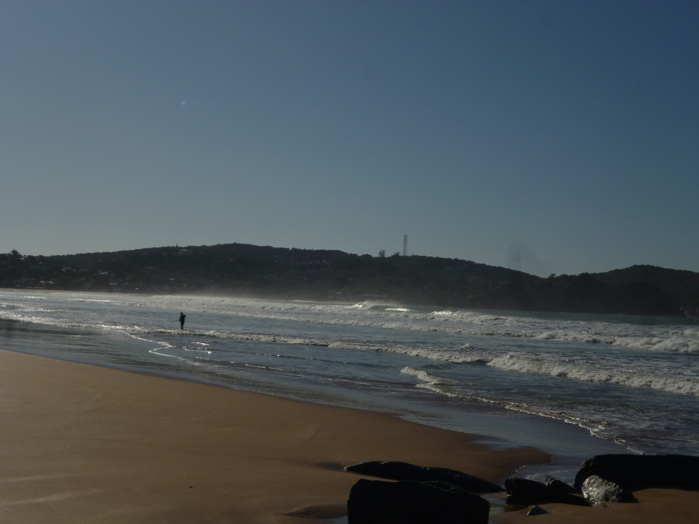

Ponta do marisco - Geriba
Ela está entre as mais populares e visitadas praias de Búzios, devido suas ondas é ideal até mesmo para a prática de esportes como surf.
Em seu canto direito, é possível subir a trilha pela rocha e ter uma visão maravilhosa da praia, este ponto conhecido como ponta do marisco. Já em seu canto esquerdo o mar se torna mais tranquilo ideal para se entrar com crianças.

Seus animais e vegetações são uma característica específica vinda da região dos lagos, como o cacto cabeça de velho, que está presente em torno de suas montanhas.
Sua localização pode ser dada a partir de diversos caminhos, tendo quase 2km de extensão, e com uma grande faixa de areia, ótima para caminhadas, a praia conta com diversas entradas para facilitar seu acesso.
Ponta da lagoinha - Ferradura
Pode ser conhecida como Himalaia Brasileiro, está localizada entre as praias Foca e Ferradura. É um ótimo local para se admirar o pôr ou nascer do sol e impressiona com suas formações rochosas e suas pequenas piscinas naturais que se formam na maré baixa, não é um local muito conhecido, sendo bem calmo e tranquilo.
A Ponta da Lagoinha é constantemente estudada por diversos cientistas, já q abriga interessantes características morfológicas e geológicas.
Este "apelido" veio a partir do fato de que sua formação geológica, datada de 600 milhões de anos, esteve cercada por rochas íngremes em camadas paralelas, um fato geológico que está presente no Himalaia, sendo um indício da formação continental.
Praia da foca - Ferradura
A pequena Praia da Foca, pouco conhecida pelos turistas, é um dos mais lindos cantinhos de Búzios e merece várias visitas. Falamos em várias porque a praia sofre um bocado a variação da maré e a cada hora do dia ela apresenta características bem diferentes.
A Praia da Foca está localizada na estreita passagem entre dois paredões de rochas. Essa formação faz com que ela tenha características únicas na cidade, por misturar a violência do mar aberto com a calmaria da água que entra na enseada. Quando a maré está alta, as pedras à beira da areia começam a formar deliciosas piscinas. No final da tarde, quando a água recua, é o melhor momento para aproveitar.
A Praia da Foca está localizada na estreita passagem entre dois paredões de rochas. Essa formação faz com que ela tenha características únicas na cidade, por misturar a violência do mar aberto com a calmaria da água que entra na enseada. Quando a maré está alta, as pedras à beira da areia começam a formar deliciosas piscinas. No final da tarde, quando a água recua, é o melhor momento para aproveitar.
Praia do forno - Ferradura
Ela não está entre as mais procuradas pelos turistas, exatamente por isso é uma excelente pedida para dias de final de semana, quando Búzios está lotada. A Praia do Forno tem mar extremamente tranquilo e transparente, mas a grande estrela do local é a areia cor-de-rosa, que dá charme à praia.
A faixa de areia não é longa — apenas 50 m — e nas duas pontas há formações rochosas. No canto direto, é possível atravessar as pedras e acessar uma pequena praia que se forma no local durante a maré baixa. É um lindo cenário, dos mais belos de Búzios.
A praia, apesar de não ser muito popular entre os visitantes, é uma boa pedida para passar o dia. Ela tem restaurante, é ótima para a prática de snorkeling e ainda oferece um belíssimo pôr do sol por trás da montanha que cerca a faixa de areia.
O júri Nacional do Programa Bandeira Azul aprovou a candidatura da praia do Forno para receber o selo ecológico do Programa Bandeira Azul. Trata-se de um selo de qualidade ambiental e urbanística conferido a praias que atendem um grupo total de 34 critérios, entre eles, qualidade físico-química e biológica da água do mar, comprovada em 80 análises, requisitos de acessibilidade, levantamento de áreas sensíveis ambientalmente, análise do pertencimento a Unidades de Conservação, planejamento de gestão de tráfego, código de postura na praia, plano de emergência ambiental e ações de educação ambiental, entre outros.
Turma - 1101
Grupo - Antonio, Ana Luiza, jasmin, mora